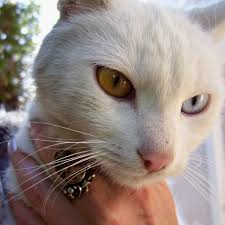
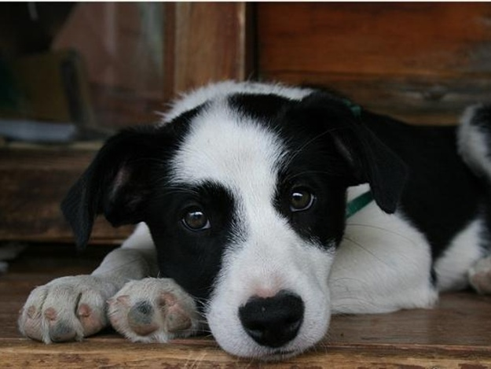

Перш ніж купувати собаку чи кота – зайдіть до нас. У притулку знайдуться друзі будь-кому до душі – великі, маленькі, охоронці, компаньйони, лінивці та непосидьки. Коли ми беремо тваринку з притулку, то рятуємо одразу трьох: тваринку, яку забрали додому, бездомну тварину з вулиці, що займе звільнене місце у притулку, і, звичайно, Людину в собі. Не купуй – прихисти, адже справжня дружба не продається!
Привіт, друзяко! Мене звати Муся і мені всього два місяці. Я грайлива, кумедна і пухнаста киця, а ще, кажуть, що я маленький клубочок щястя. Я дуже хочу, щоб у мене був справжній дім і власна мисочка. Чекаю на тебе та обіцяю дарувати тобі ласку і мурчання.
Привіт усім любителям котів! Мене звати просто - Кіт. Не дуже молодий, але ловити мишей ще можу! Також я добряк, який шукає нову сім'ю.
Всім привіт! Я Лайла - така собі дворняжка з милою мордочкою. Дуже хочу мати справжнього друга, який буде мене любити і годувати мене смачними кісточками, а ще я дуже люблю кавуни. Чекаю на зустріч з тобою і обіцяю бути найкращим другом у твоєму житті.
Привітулі! Я Скай - юний і сміливий песель. Ще недавно грався у великому дворі, а тепер мій дім тут. Шукаю доброго і відповідального господаря для доооовгої та міцної дружби. Обіцяю любити і захищати.